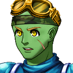

Humanos
- Humanos são a raça mais comum.
- Embora não possuam atributos excepcionais em comparação com outras raças, os humanos se destacam por sua flexibilidade e versatilidade.
- Suas moradias estão espalhadas pelo mundo, em locais facilmente visíveis..

Elfos
- Elfos são uma raça elegante e graciosa, conhecida por sua longevidade e forte conexão com a natureza.
- Seus sentidos aguçados os tornam excelentes caçadores e arqueiros, e muitos possuem uma afinidade natural com a magia elemental.
- Eles vivem nas florestas, protegidos pela própria natureza.
Anões
- Anões são uma raça robusta, famosa por sua força física, resistência e habilidades como ferreiros.
- Eles têm uma aptidão natural para manusear armas pesadas e armaduras resistentes.
- Suas moradias são subterrâneas, geralmente em montanhas, onde constroem suas cidades e fortalezas.

Goblins
- Goblins são criaturas astutas e engenhosas, mestres da forja e da mineração.
- Embora sejam fisicamente frágeis, compensam com sua inteligência, criando armadilhas e engenhocas mecânicas para a batalha.
- Eles vivem em minas ocultas, muitas vezes cheias de armadilhas.
Demônios
- Demônios são uma raça poderosa e destrutiva, oriunda de reinos infernais e sombrios.
- Eles possuem uma força física avassaladora e habilidades mágicas impressionantes, com uma afinidade especial por magias de fogo e escuridão.
- Podem atuar como tanques formidáveis ou magos sombrios, causando grandes quantidades de dano.
Anjos
- Anjos representam o equilíbrio e a ordem. Com uma aparência divina e majestosa, eles possuem uma forte conexão com o sagrado.
- Sua principal força reside em magias de luz, cura e defesa, o que os torna essenciais em grupos que precisam de suporte.
- Oriundos de reinos espirituais, os anjos são frequentemente vistos como guardiões e defensores do bem.
Fadas
- Fadas são uma raça pequena com uma profunda ligação à natureza e ao mundo espiritual.
- Embora não possuam a força física de outras raças, sua velocidade e capacidade de confundir ou enfraquecer inimigos as tornam aliadas estratégicas em batalhas.
- Elas geralmente vivem próximas a lagos ocultos em florestas, onde se sentem mais conectadas à natureza.
Demi-Humanos
- Demi-humanos são seres híbridos que combinam características humanas com aspectos de animais.
- Sua forma híbrida concede habilidades especiais, como força aumentada, velocidade aprimorada ou sentidos aguçados, dependendo do animal com o qual se misturam.
- Demi-humanos costumam ser encontrados em áreas naturais, especialmente próximas a flores e vegetação exuberante.